Lumi Habits
Habit Tracking App
The Product
Lumi Habits is a habits tracking App for full-time employees to track their habits and learn about healthy habits and accompanying website where the users can sync their progress.
Project Duration: From 22 July to 2 November 2023.
Illustrations are from storyset.com
I have blogged about my experience and thought process in a little more detail
here .
The Problem
Full-time employees has trouble sticking to their routine and can’t find an app to use on both the mobile and the desktop.
The Goal
Design an app to help adults track their habits and learn about the healthy habits.
My Role and Responsibilities
UX designer responsible for the entire process
Responsiblities
- Competitive audit
- Storyboards
- User Research
- Paper and digital wireframing
- Low-fi prototyping
- High-fi prototyping
- Conducting usability studies
- Iterating on designs
User Research
I made a questionnaire using Google form and sent it to a few of my online friends but asked them if they were suitable participants first for example, if they are interested in health and wellness. I got 4 responses back which of course isn't enough for two personas. But I managed to make 2 personas
Users Pain points
- Difficulty Having Scheduled routine
- Complicated User experience
- No Desktop version to sync with
User Journey maps
I approached this step by making assumptions about the day of the two personas, only focusing on the things I got from the questionnaire to reduce any designer bias.
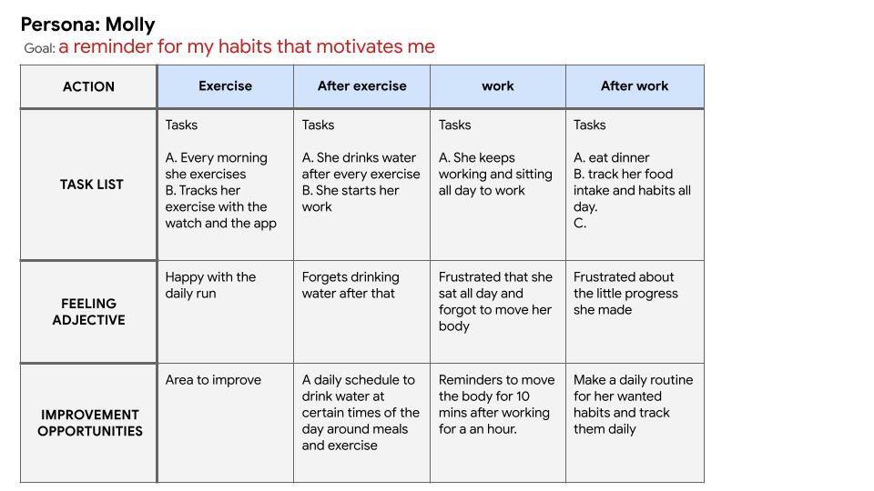
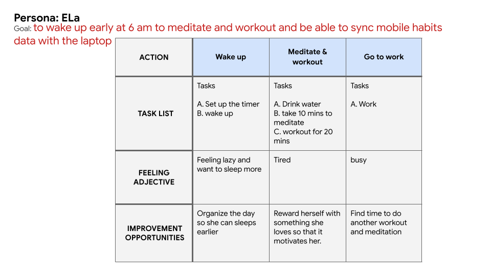
Paper Wireframes
I started looking at a few of the most famous apps and the ones I got from the early questionnaire. I have got a few ideas, especially the ones that will solve the users' problems. I tried to make it as easy and fast as possible to add a habit but at the same they still have an option to customize it.
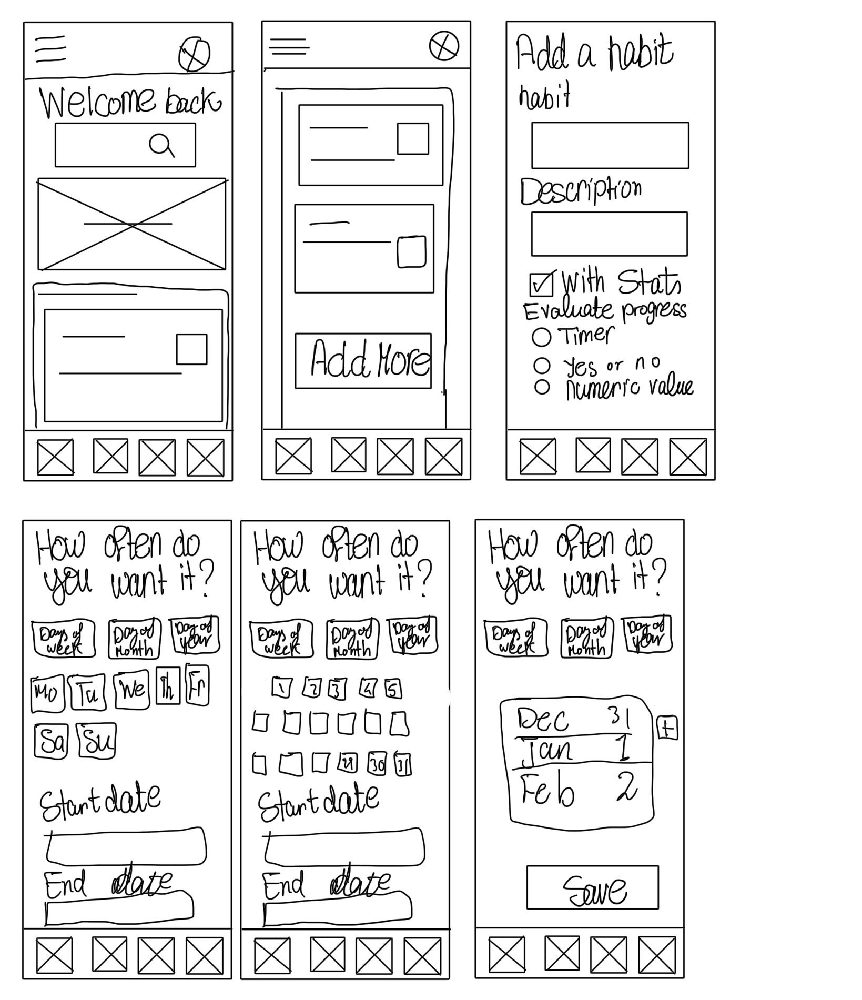
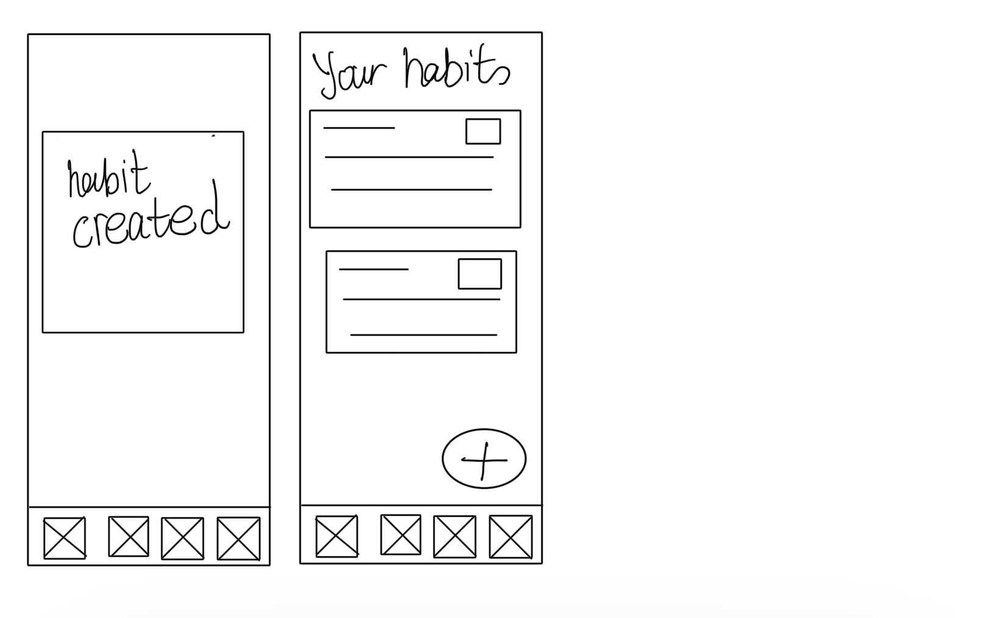
Digital wireframes
These are the designs before the usability study. Initial design based on assumptions and research.
Here is the link for the low-fi prototype.
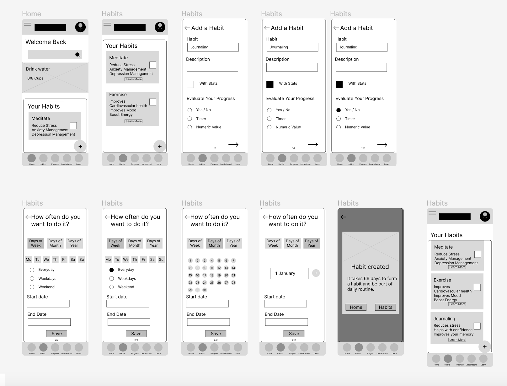
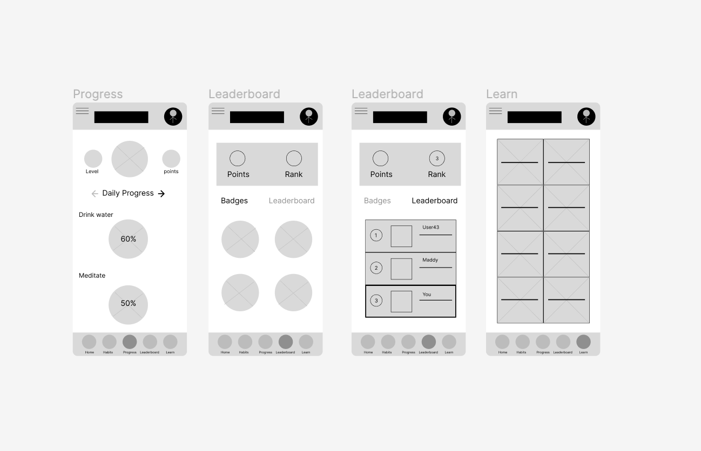
Usability Study 1
- Four participants were asked to record their screen and voice while using the prototype
-
They were asked to perform three tasks.
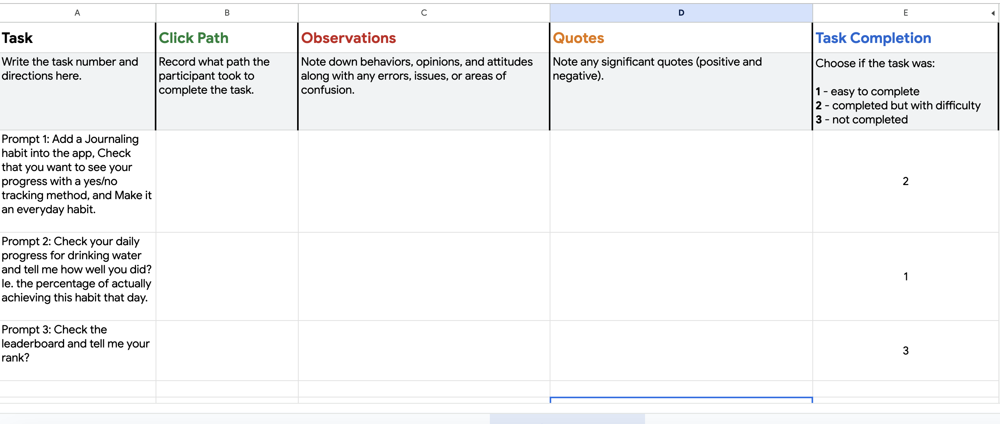
Usability Study Findings
Prompt 1
- The plus sign should take the users to the "add a habit" screen right away without opening the habits screen. This makes sense, I think cause I assumed that They wanted to see the available habits already on the list before adding a new one.
-
The habits popup should be more intuitive. I think with the UI design, this should be more obvious.
- The flow was quite complicated, confusing and long just to add a habit. It needs to be simplified and give them an option to skip some steps. Use a more clear wording. For example, "With stats" was a little confusing I guess.
- An idea for a new feature: To be able to organize the habits on the list.
Prompt 2
- This prompt was a bit tricky, So two participants found it easily and answered the questions right away. However, it was confusing for the other two participants.
-
I think it wasn't clear and the wording was a bit off.
- An idea for a new feature: Instead of showing the progress in percentage, It is better to be in cups for example for the water habit. More detailed progress measurement.
Prompt 3
- All of them had difficulty finding the leaderboard after clicking on the leaderboard tab Since it is a tab inside the leaderboard tab. which I know now isn't a good choice
-
Some of them said that they wouldn't use the leaderboard tab maybe occasionally just look at it
- Most of them liked the badges
- More features are needed for this: Day streaks and, the number of days required to get the badge
Iterating on the low-fidelity designs
I applied the insights as follows:
- Added a customization screen before the home screen, so this will appear once when the user opens the app the first time. To ask whether they want the leaderboard or not.
- Option to skip the ability to have a frequent habit.
- Added a screen to determine the time of the day they want to do the habit.
- Removed the badges from the leaderboard tab and added them to the profile page.
- Changed The way the progress is calculated so instead of having them in percentages, I made the water in cups and meditation in minutes.
- Changed "with stats" to "Track my progress"
Design System
Two font families have been choosen. A serif typeface Playfair Display for titles and a Sanserif type face Open Sans for the text for easier readability.
I wanted the app to have colorful and bold colors while at the same time calming. I asked Melon for the best colors for a habit-tracking app. Melon AI responded with either blue or green since they are calming and motivating. I was actually thinking of blue specifically light blue cause I know it is a calming color. But I decided to use green cause green is associated with freshness, growth, positivity and relaxation, it felt like the right base color for my app.
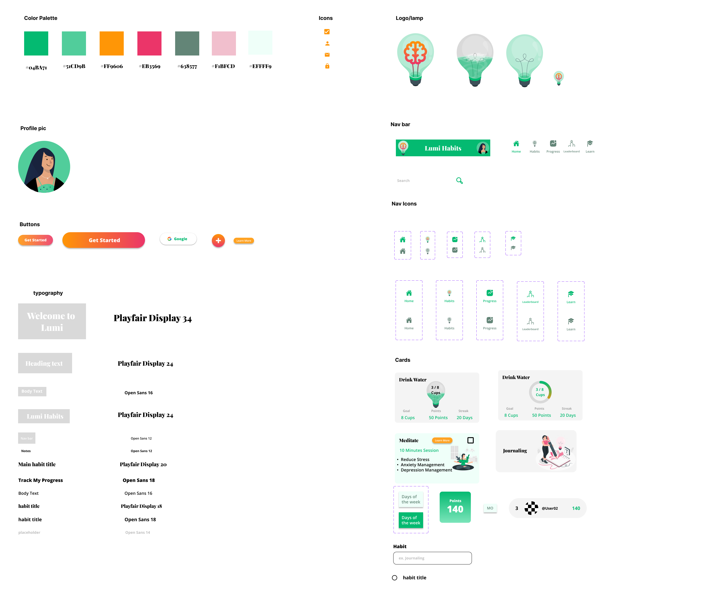
High-fi Prototype
These are the designs before the usability study. Iterated design based on first usability study.
Here is the link for the hi-fi prototype.
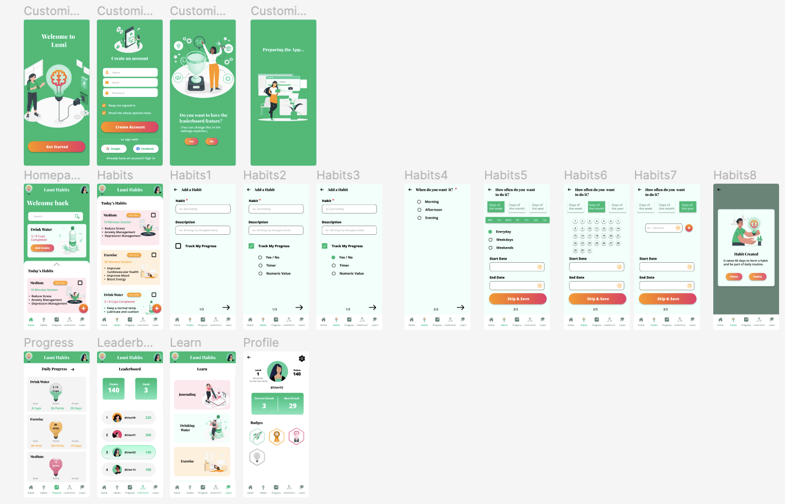
Desktop Website Wireframes
Mobile & Tablet Hompage
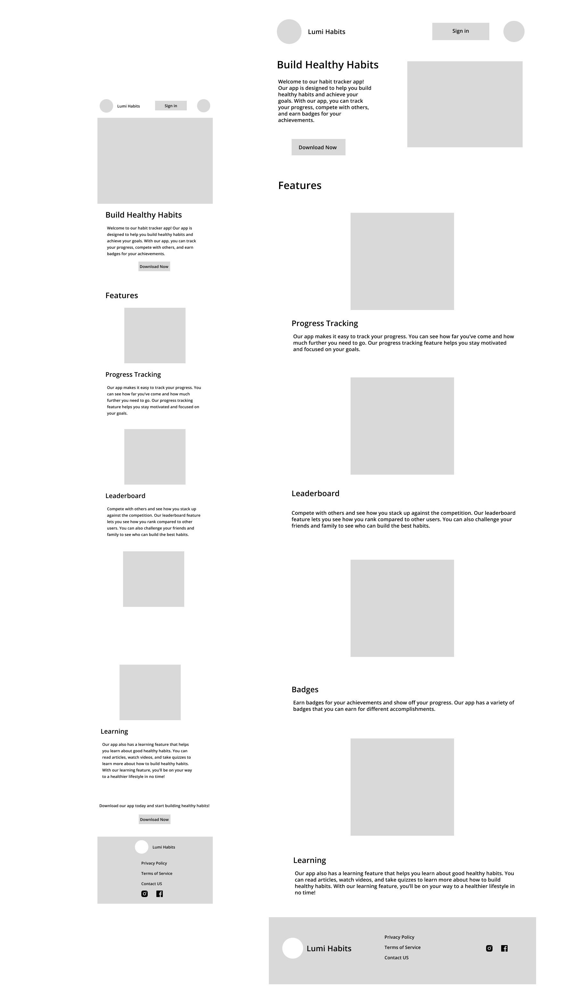
Desktop Wireframes
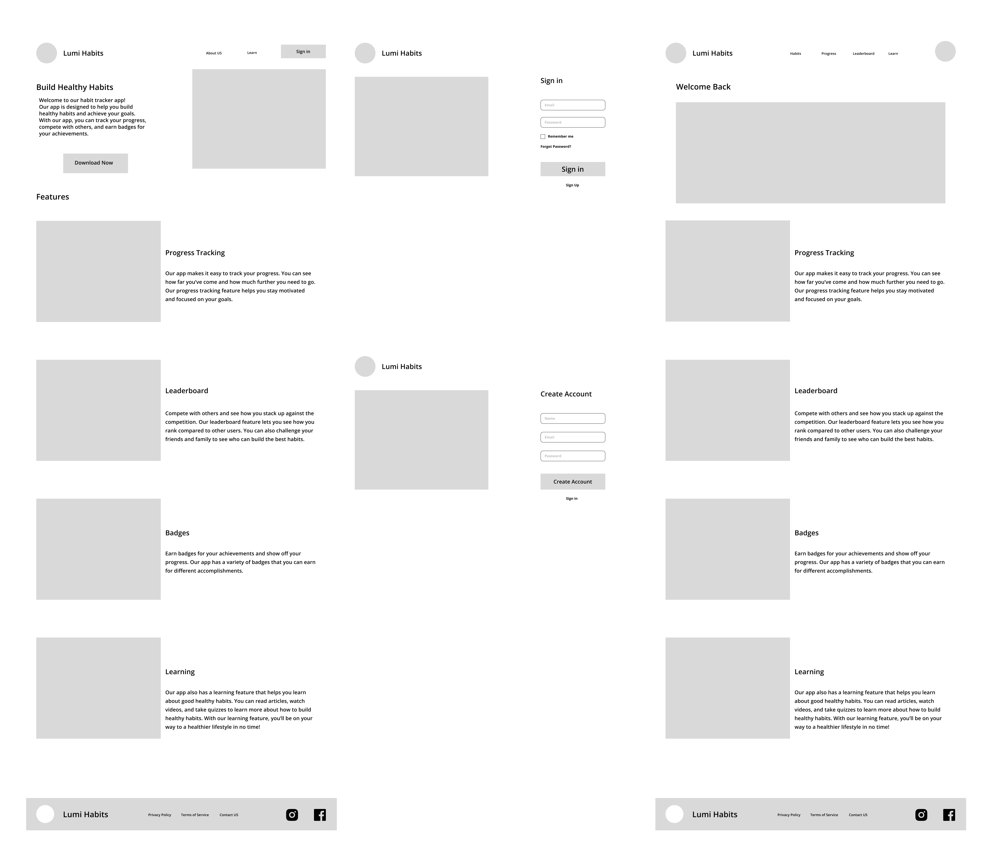
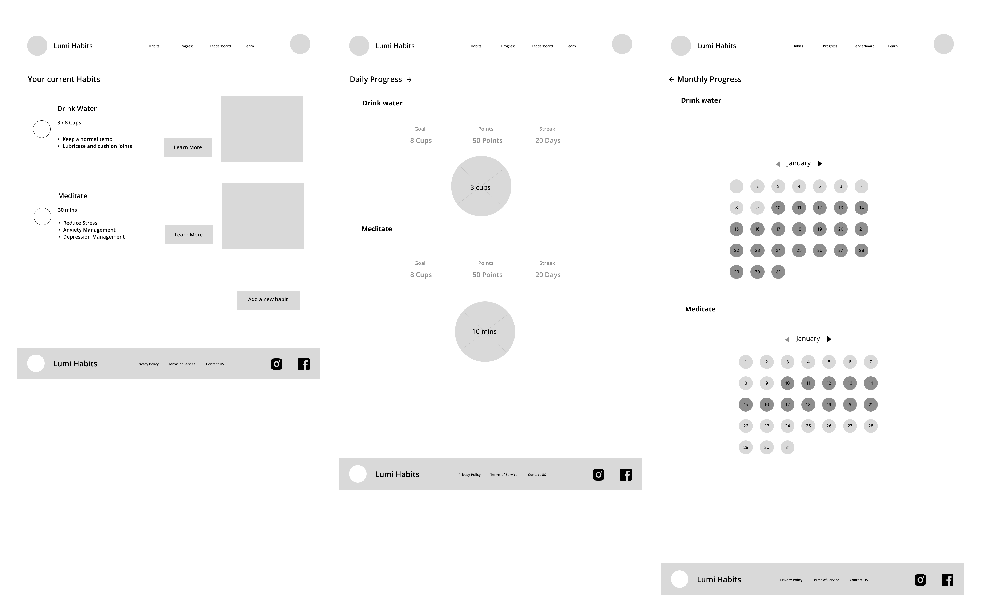
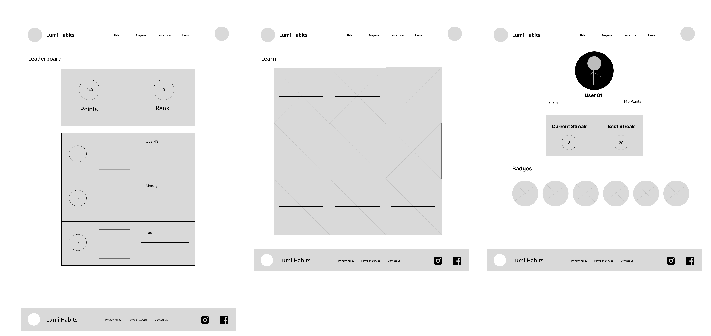
Lumi Website HomeScreen Mockup
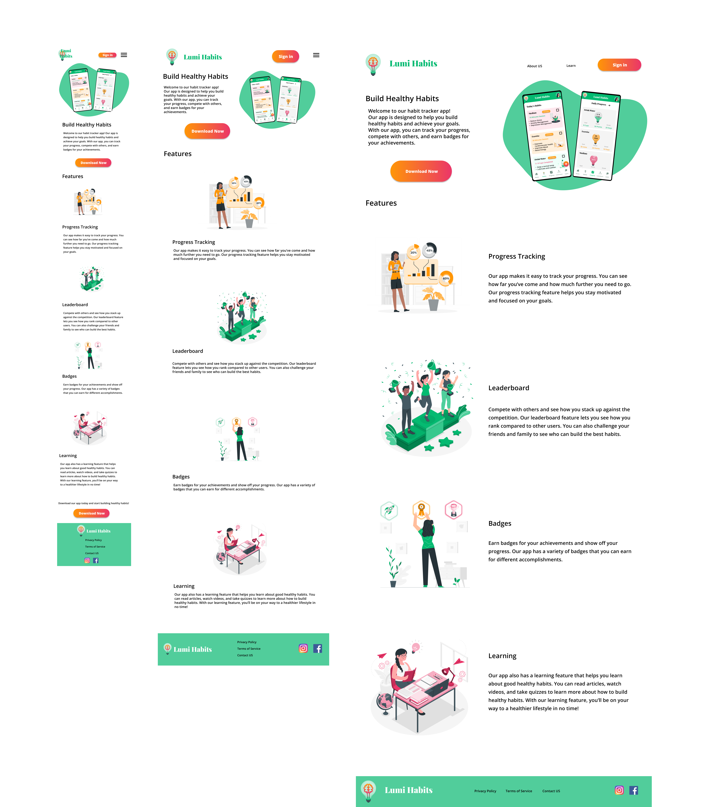
Accessibility considerations
-
High color contrast between the text and the background
-
I used icons for easier navigation
-
Impact
This app will make the life of a busy full-time employee easier and fun to organize
What I learned
Usability studies are really important to make design decisions. We should not assume how the user would behave, it has to be backed up with data.